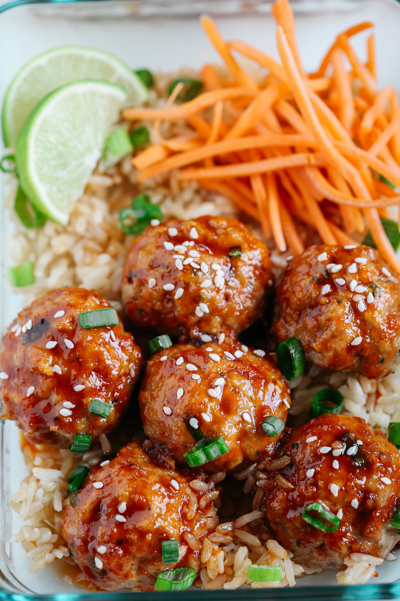

Sriracha Meatballs

Simple, flexible recipe
This is a filling recipe with low prep time and can be expanded easily to provide several leftover
lunches if you like to meal prep. The sriracha sauce ensures the meatballs have a sweet, savory flavor
profile with a bit of heat. The basic meatball recipe could also be used in other recipes calling for meatballs.
If you don't want to use rice, you could easily use cauliflower rice or quinoa instead.
Making your own sauce may sound intimidating, but this recipe is straight forward and gives you great sauce
that can be used for other recipes ideas you may have.
Ingredients
Meatball Ingredients
- 2 lbs of lean ground turkey
- 1 cup whole wheat panko breadcrumbs
- 2 eggs
- 1/4 cup green onions, chopped
- 1/2 tsp. garlic powder
- 1/2 tsp. salt
- 1/2 tsp. black pepper
Sauce Ingredients
- 1/4 cup Sriracha sauce
- 3 Tbsp reduced-sodium soy sauce
- 3 Tbsp rice vinegar
- 3 Tbsp honey
- 1 Tbsp grated fresh ginger
- 3 cloves garlic, minced
- 1/2 tsp. toasted sesame oil
Recipe Directions
- Preheat Oven to 375 °F
- In a large bowl, mix together turkey, panko breadcrumbs, eggs, green onions, garlic powder and salt/pepper until well combined.
- Shape mixture into 1 1/2-inch balls (makes roughly 40 balls) and lightly spray one or two baking sheets with cooking spray.
- Place the meatballs spaced apart on the baking sheets and bake for 20 to 25 minutes, or until brown and cooked through.
- While the meatballs are baking, combine all the ingredients for the sauce in a small saucepan and bring to a boil over medium heat, whisking continuously.
- Once boiling, reduce heat and simmer for 8 to 10 minutes and the sauce will begin to thicken
- Combine the sauce and meatballs in a large container and toss until the meatballs are well covered
- Serve over rice topped with green onions and sesame seeds
Return to top
Return to main page